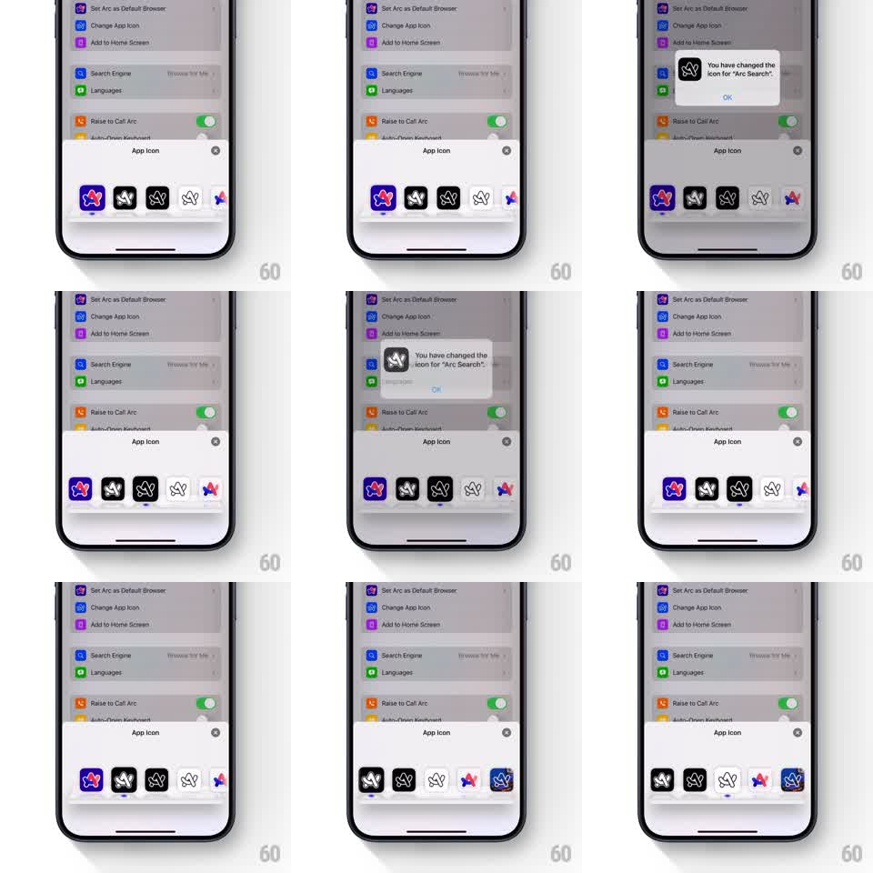

Media
Frame-by-frame

Rebuild this animation 1:1: Arc Search's app icon dock picker - a glass dock inside the settings sheet scrolls horizontally through icon variants, the centered icon enlarging, and tapping one fires a confirmation alert.

Rebuild this animation 1:1: Arc Search's app icon dock picker - a glass dock inside the settings sheet scrolls horizontally through icon variants, the centered icon enlarging, and tapping one fires a confirmation alert. ## Integration Integration: stack-agnostic spec - springs given as stiffness/damping, timed motions as duration + curve; map every value to your framework and animation library of choice. ## Scene Arc's settings list dimmed behind an "App Icon" bottom sheet: a skeuomorphic glass dock (frosted translucent bar with specular top edge) holding a horizontal strip of Arc icon variants (blue gradient, dark, black, outline, colorful). The selected icon sits centered and enlarged on the dock. An alert confirms "You have changed the icon for Arc Search". ## Motion spec Pattern: dock carousel with center magnification, gesture-driven. - The dock slides up with the sheet (spring stiffness 300 damping 24), icons settling into their slots. - Dragging scrolls the icon strip 1:1; on release it decelerates (600ms) and snaps the nearest icon to center (spring stiffness 350 damping 24). - Icons scale by distance from center (center 1.15x, edges 0.9x) and brighten at center, like a dock magnification. - Tapping the centered icon selects it: a small bounce (scale 1.15 to 1.3 to 1.15, spring stiffness 400 damping 16) and the system-style alert pops in (scale 0.9 to 1, 250ms). ## Calibration - The glass dock is the star: blur, specular highlight, and a subtle reflection of the icons above its surface. - Magnification follows scroll position continuously, not after snap. ## Reduced motion Strip scrolls without magnification; alert fades. ## Don't miss - The selected icon's slot is marked (underline dot) so selection and centering are distinct states. - The dock sits flush with the sheet's bottom, home-indicator clear.